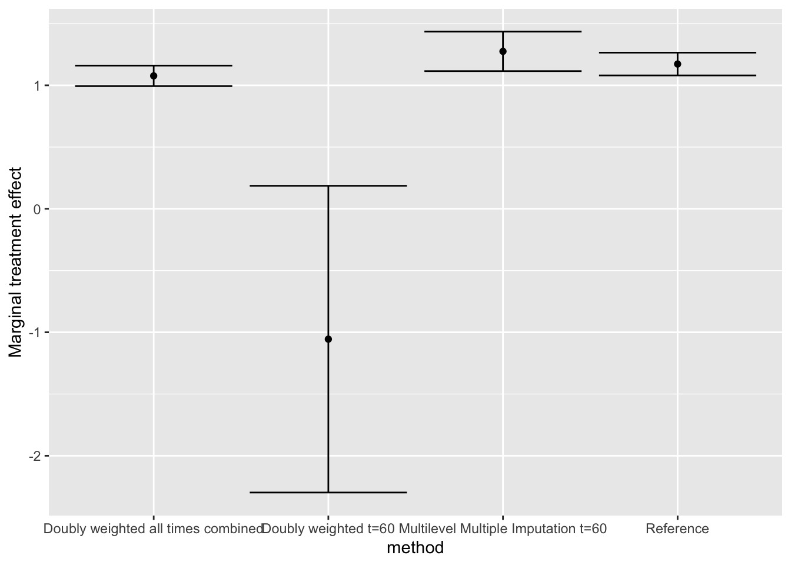

library(dplyr)
library(broom)
library(ggplot2)
library(mice)7 Dealing with irregular and informative visits
Janie Coulombe ![]()
Thomas Debray
7.1 Introduction
We first load the required packages
Subsequently, we load the relevant R scripts:
source("resources/chapter12_sim.r")Loading required package: nlme
Attaching package: 'nlme'The following object is masked from 'package:dplyr':
collapseLoading required package: MASS
Attaching package: 'MASS'The following object is masked from 'package:dplyr':
selectLoading required package: truncnormsource("resources/chapter12_fig_functions.r")
source("resources/chapter12_mlmi.r")7.2 Example dataset
Below, we generate an example dataset that contains information on the treatment allocation x and three baseline covariates age, sex and edss (EDSS at treatment start). The discrete outcome y represents the Expanded Disability Status Scale (EDSS) score after time months of treatment exposure. Briefly, the EDSS is a semi-continuous measure that varies from 0 (no disability) to 10 (death).
set.seed(9843626)
dataset <- sim_data_EDSS(npatients = 500,
ncenters = 10,
follow_up = 12*5, # Total follow-up (number of months)
sd_a_t = 0.5, # DGM - Within-visit variation in EDSS scores
baseline_EDSS = 1.3295, # DGM - Mean baseline EDDS score
sd_alpha_ij = 1.46, # DGM - Between-subject variation in baseline EDSS
sd_beta1_j = 0.20, # DGM - Between-site variation in baseline EDSS
mean_age = 42.41,
sd_age = 10.53,
min_age = 18,
beta_age = 0.05, # DGM - prognostic effect of age
beta_t = 0.014, # DGM - prognostic effect of time
beta_t2 = 0, # DGM - prognostic effect of time squared
delta_xt = 0, # DGM - interaction treatment time
delta_xt2 = 0, # 0.0005 # DGM - interaction treatment time2
p_female = 0.75,
beta_female = -0.2 , ## DGM - prognostic effect of male sex
delta_xf = 0, ## DGM - interaction sex treatment
rho = 0.8, # DGM - autocorrelation of between alpha_tij
corFUN = corAR1, # DGM - correlation structure of the latent EDSS scores
tx_alloc_FUN = treatment_alloc_confounding_v2 ) ## or treatment_alloc_randomized
We remove the outcome y according to the informative visit process that depends on the received treatment, gender, and age.
dataset_visit <- censor_visits_a5(dataset, seed = 12345) %>%
dplyr::select(-y) %>%
mutate(time_x = time*x)In the censored data, a total of 17 out of 5000 patients have a visit at time=60.
7.3 Estimation of treatment effect
We will estimate the marginal treatment effect at time time=60.
7.3.1 Original data
origdat60 <- dataset %>% filter(time == 60)
# Predict probability of treatment allocation
fitps <- glm(x ~ age + sex + edss, family = 'binomial',
data = origdat60)
# Derive the propensity score
origdat60 <- origdat60 %>% mutate(ipt = ifelse(x == 1, 1/predict(fitps, type = 'response'),
1/(1-predict(fitps, type = 'response'))))
# Estimate
fit_ref_m <- tidy(lm(y ~ x, weight = ipt, data = origdat60), conf.int = TRUE) 7.3.2 Doubly-weighted marginal treatment effect
We here implement inverse probability of response weights into the estimating equations to adjust for nonrandom missingness Coulombe, Moodie, and Platt (2020).
obsdat60 <- dataset_visit %>% mutate(visit = ifelse(is.na(y_obs),0,1)) %>% filter(time == 60)
gamma <- glm(visit ~ x + sex + age + edss, family = 'binomial', data = obsdat60)$coef
obsdat60 <- obsdat60 %>% mutate(rho_i = 1/exp(gamma["(Intercept)"] +
gamma["x"]*x +
gamma["sex"]*sex +
gamma["age"]*age))
# Predict probability of treatment allocation
fitps <- glm(x ~ age + sex + edss, family='binomial', data = obsdat60)
# Derive the propensity score
obsdat60 <- obsdat60 %>% mutate(ipt = ifelse(x==1, 1/predict(fitps, type='response'),
1/(1-predict(fitps, type='response'))))
fit_w <- tidy(lm(y_obs ~ x, weights = ipt*rho_i, data = obsdat60), conf.int = TRUE)7.3.3 Multilevel multiple imputation
We adopt the imputation approach proposed by Debray et al. (2023). Briefly, we impute the entire vector of y_obs for all 61 potential visits and generate 10 imputed datasets. Note: mlmi currently does not support imputation of treatment-covariate interaction terms.
imp <- impute_y_mice_3l(dataset_visit, seed = 12345)We can now estimate the treatment effect in each imputed dataset
# Predict probability of treatment allocation
fitps <- glm(x ~ age + sex + edss, family='binomial', data = dataset_visit)
# Derive the propensity score
dataset_visit <- dataset_visit %>% mutate(ipt = ifelse(x==1, 1/predict(fitps, type='response'),
1/(1-predict(fitps, type='response'))))
Q <- U <- rep(NA, 10) # Error variances
for (i in seq(10)) {
dati <- cbind(dataset_visit[,c("x","ipt","time")], y_imp = imp[,i]) %>% filter(time == 60)
# Estimate
fit <- tidy(lm(y_imp ~ x, weight = ipt, data = dati), conf.int = TRUE)
Q[i] <- fit %>% filter(term == "x") %>% pull(estimate)
U[i] <- (fit %>% filter(term == "x") %>% pull(std.error))**2
}
fit_mlmi <- pool.scalar(Q = Q, U = U)7.4 Reproduce the results using all data to compute the marginal effect with IIV-weighted
7.4.1 Doubly -weighted marginal treatment effect total
obsdatall <- dataset_visit %>% mutate(visit = ifelse(is.na(y_obs),0,1))
gamma <- glm(visit ~ x + sex + age + edss, family = 'binomial', data = obsdatall)$coef
obsdatall <- obsdatall %>% mutate(rho_i = 1/exp(gamma["(Intercept)"] +
gamma["x"]*x +
gamma["sex"]*sex +
gamma["age"]*age))
# Predict probability of treatment allocation
fitps <- glm(x ~ age + sex + edss, family='binomial', data = obsdatall)
# Derive the propensity score
obsdatall <- obsdatall %>% mutate(ipt = ifelse(x==1, 1/predict(fitps, type='response'),
1/(1-predict(fitps, type='response'))))
fit_w <- tidy(lm(y_obs ~ x, weights = ipt*rho_i, data = obsdatall), conf.int = TRUE)7.5 Results

Version info
This chapter was rendered using the following version of R and its packages:
R version 4.2.3 (2023-03-15 ucrt)
Platform: x86_64-w64-mingw32/x64 (64-bit)
Running under: Windows 10 x64 (build 19045)
Matrix products: default
locale:
[1] LC_COLLATE=Dutch_Netherlands.utf8 LC_CTYPE=Dutch_Netherlands.utf8
[3] LC_MONETARY=Dutch_Netherlands.utf8 LC_NUMERIC=C
[5] LC_TIME=Dutch_Netherlands.utf8
attached base packages:
[1] stats graphics grDevices utils datasets methods base
other attached packages:
[1] truncnorm_1.0-9 MASS_7.3-60 nlme_3.1-162 mice_3.16.0
[5] ggplot2_3.4.2 broom_1.0.5 dplyr_1.1.2
loaded via a namespace (and not attached):
[1] shape_1.4.6 tidyselect_1.2.0 xfun_0.39 purrr_1.0.1
[5] splines_4.2.3 lattice_0.21-8 colorspace_2.1-0 vctrs_0.6.3
[9] generics_0.1.3 htmltools_0.5.5 yaml_2.3.7 pan_1.6
[13] utf8_1.2.3 survival_3.5-5 rlang_1.1.1 jomo_2.7-6
[17] pillar_1.9.0 nloptr_2.0.3 glue_1.6.2 withr_2.5.0
[21] RColorBrewer_1.1-3 foreach_1.5.2 lifecycle_1.0.3 munsell_0.5.0
[25] gtable_0.3.3 htmlwidgets_1.6.2 codetools_0.2-19 evaluate_0.21
[29] labeling_0.4.2 knitr_1.43 fastmap_1.1.1 fansi_1.0.4
[33] Rcpp_1.0.10 scales_1.2.1 backports_1.4.1 jsonlite_1.8.5
[37] farver_2.1.1 lme4_1.1-33 digest_0.6.31 grid_4.2.3
[41] cli_3.6.1 tools_4.2.3 magrittr_2.0.3 glmnet_4.1-7
[45] tibble_3.2.1 tidyr_1.3.0 pkgconfig_2.0.3 ellipsis_0.3.2
[49] Matrix_1.5-4.1 minqa_1.2.5 rmarkdown_2.22 rstudioapi_0.14
[53] iterators_1.0.14 rpart_4.1.19 mitml_0.4-5 R6_2.5.1
[57] boot_1.3-28.1 nnet_7.3-19 compiler_4.2.3 References
Coulombe, Janie, Erica E. M. Moodie, and Robert W. Platt. 2020. “Weighted Regression Analysis to Correct for Informative Monitoring Times and Confounders in Longitudinal Studies.” Biometrics 77 (1): 162–74. https://doi.org/10.1111/biom.13285.
Coulombe, Janie, Erica E. M. Moodie, Robert W. Platt, and Christel Renoux. 2022. “Estimation of the Marginal Effect of Antidepressants on Body Mass Index Under Confounding and Endogenous Covariate-Driven Monitoring Times.” The Annals of Applied Statistics 16 (3). https://doi.org/10.1214/21-aoas1570.
Debray, Thomas PA, Gabrielle Simoneau, Massimiliano Copetti, Robert W Platt, Changyu Shen, Fabio Pellegrini, and Carl de Moor. 2023. “Methods for Comparative Effectiveness Based on Time to Confirmed Disability Progression with Irregular Observations in Multiple Sclerosis.” Statistical Methods in Medical Research, June, 096228022311720. https://doi.org/10.1177/09622802231172032.